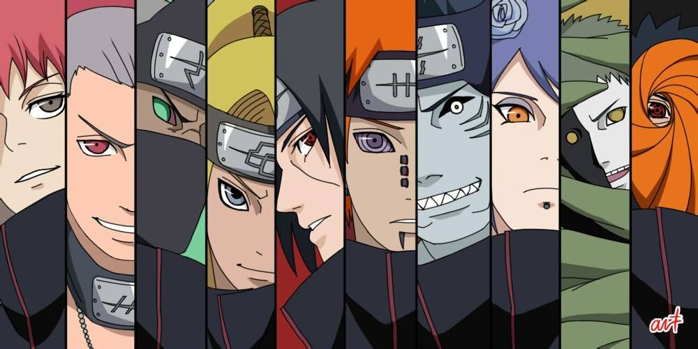

"Naruto" es un anime japonés creado por Masashi Kishimoto que sigue las aventuras de Naruto Uzumaki, un joven ninja con el sueño de convertirse en Hokage, el líder de su aldea. Ambientado en un mundo de ninjas y jutsus, narra las luchas y amistades de Naruto junto a sus compañeros de equipo Sasuke y Sakura. Con elementos de acción, comedia y drama, la serie explora temas de amistad, superación personal y destino mientras Naruto busca su lugar en el mundo ninja.
Naruto Shippuden es una serie de animación japonesa que narra las aventuras de un joven ninja con el poder de un demonio. El protagonista, Naruto Uzumaki, desea convertirse en el mejor ninja de la Aldea Oculta de Konoha y demostrar su valía al mundo. La acción comienza después de los dos años y medio que Naruto ha pasado entrenando con su maestro Jiraiya. En esta nueva etapa, reaparecen todos los personajes de la serie anterior, pero con más experiencia y fuerza.
Boruto: Naruto Next Generations es una serie de animación japonesa que nos sumerge en un Konoha moderno y en paz. Los altos edificios se alzan en las calles, las pantallas gigantes muestran imágenes variadas y los medios de transporte conectan los diversos distritos. Aunque sigue siendo una aldea ninja, el número de civiles ha aumentado y la vida de los ninjas ha cambiado. Boruto Uzumaki es hijo del Séptimo Hokage, Naruto Uzumaki, y se une a la Academia Ninja.
Copyright © 2024 Naruto Inc. Todos los derechos reservados


Naruto SA CIF B73317494. C/Stra Irene, 4, Ciudad Lineal 28017, Comunidad de Madrid, Madrid. ESPAÑA.